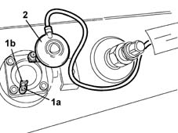
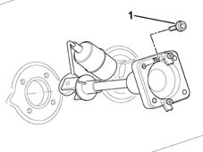
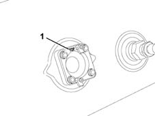
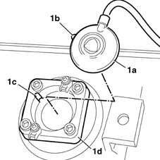

1043A62 float controlling lpg level guage r r
- Path
- Procedures > 10 ENGINE UNIT > 1043 LGP TANK AND PIPES > 1043A gpl tank > 1043A62 float controlling lpg level guage r r
- Kind
- repair procedure (removal / refitting; the operation number is the code)
- Applies to
- engines: 1.6 16v; all production periods; only with equipment: GPOWER
- Interactive page
- https://sloeber94.github.io/elrnDB-fMltpl/en/#/2891502
Applies to: engines: 1.6 16v; all production periods; only with equipment: GPOWER and Euro 3
 Removing
Removing
 Refitting
RefittingBefore working on the float, drain any residual air from the tank in accordane with the procedure described. 1043A08 lpg tank check seal
1. Loosen the retaining bolts (1) and open retaining springs (1b).
2. Remove the LPG level sensor from its housing.

Applies to: engines: 1.6 16v; all production periods; only with equipment: GPOWER and Euro 3
1. Unscrew the float retaining screws gradually and in a crosswise sequence to vent any pressurised air residues and remove the float completely together with the retaining ring.

Applies to: engines: 1.6 16v; all production periods; only with equipment: GPOWER and Euro 3
Refitting
Removing1. Place the float on the tank so that the wording 'TOP' is facing up, then tighten the float retaining bolts to the specified torque.
 | Fastening | Component | Ø | Value (daNm) |
|---|---|---|---|---|
- | Bolt | LPG LEVEL GAUGE CONTROL FLOAT.. | M6 | (TOP wording 'uppermost) 0.6 - 0.9 |

Applies to: engines: 1.6 16v; all production periods; only with equipment: GPOWER and Euro 3
1. Fit device (1a), aligning tooth (1b) with reference notch (1c) on float (1d) secured to the cylinder.
